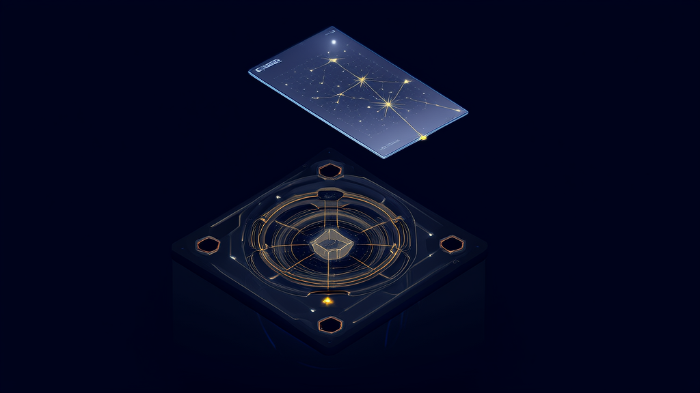
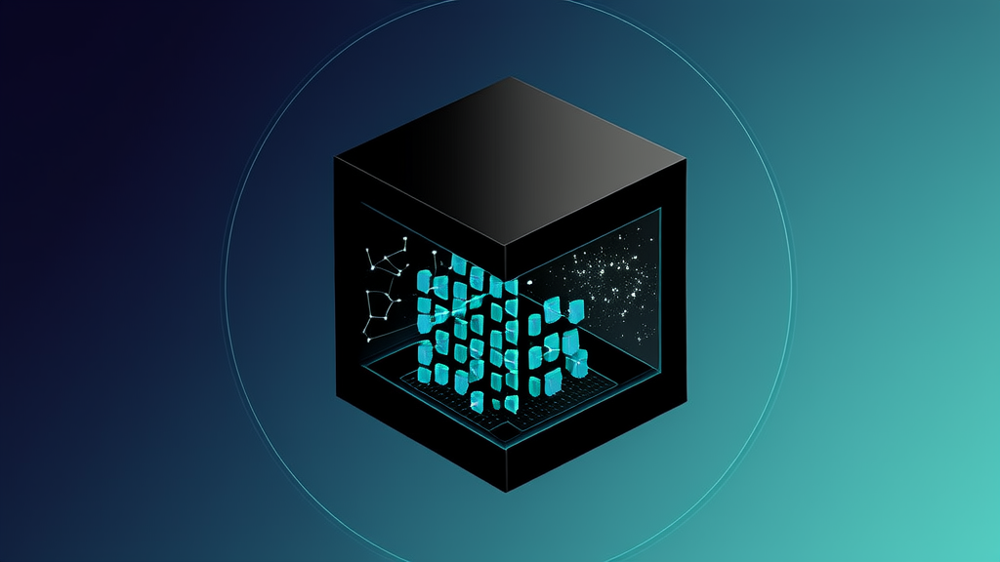
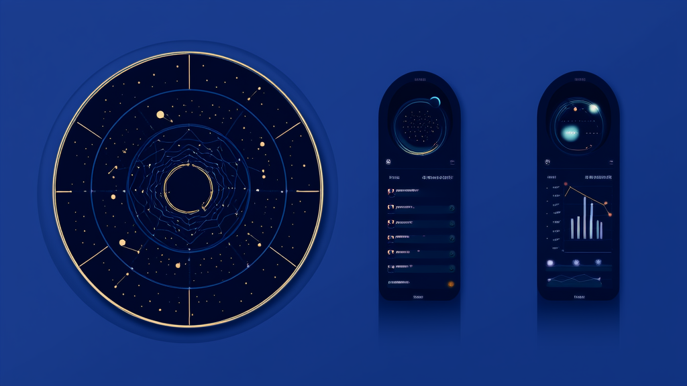

紫微斗数在线排盘案例：讯业信息 30 秒出盘 + AI 逐宫解读
河南讯业信息科技有限公司旗下「讯紫微」基于倪海厦《天纪》南派三合派体系自研紫微斗数在线排盘引擎，并接入 DeepSeek-V4.1-Flash 承担 AI 命盘解读层，用户输入出生年月日时后 30 秒即可生成专属命盘并逐宫逐星解读。方案核心是职责分离：AI 只解读引擎算出的命盘事实，每条结论必须落到具体星曜、宫位与四化，不做无依据发挥，从而解决传统 AI 算命「凭感觉编故事」的信任问题。商业化上采取低门槛策略：注册即得排盘 3 次、合盘 1 次、AI 问答 5 次且永久有效，会员标准版 ¥39/30 天、尊享版 ¥99/365 天（折算每月不到 ¥8.3）。产品同时实现首屏秒开、相同问题命中缓存秒回且不重复计费，后台改价与调额度即时生效，把传统文化命理工具做成了可复核、可运营的 SaaS 产品。
- 紫微斗数排盘出盘速度 输入出生年月日时，30 秒生成专属命盘，覆盖真太阳时校正、夏令时判定、闰月与晚子时等边界情况
- 免费体验额度与门槛 注册即得排盘 3 次、合盘 1 次、AI 问答 5 次，永久有效、无需绑卡
- 会员与加量包定价 标准版 ¥39/30 天、尊享版 ¥99/365 天（折算每月不到 ¥8.3），加量包 ¥9.9 起，额度累加不覆盖、永不过期
- 自研排盘引擎规则覆盖范围 十四主星完整入宫、十二宫呈现、四化飞星、上百条格局规则库、七档星曜亮度、大限流年，不依赖第三方算命接口
- 重复计费控制机制 已归档命盘重开不扣排盘次数，同一命盘命格总览重复加载不重复扣 AI 次数，相同问题命中缓存秒回
- 性能与运营效率 首屏秒开；后台改价（如 ¥39 临时调整为 ¥29）、调免费额度、补次数、封禁账号均即时生效，无需发版
紫微斗数在线排盘案例：讯业信息助力讯紫微 30 秒出盘 + AI 逐宫解读
结论性摘要：自研排盘引擎 + AI 解读，重构紫微斗数在线排盘

河南讯业信息科技有限公司旗下「讯紫微」，基于倪海厦《天纪》南派三合派体系自研专业紫微斗数在线排盘引擎，并接入 DeepSeek-V4.1-Flash 承担 AI 命盘解读层。用户输入出生年月日时后，30 秒即可生成专属命盘，AI 逐宫逐星展开解读。
这套方案的关键设计在于职责分离：AI 只解读引擎算出的命盘事实，每条结论必须落到具体星曜、宫位与四化，不做无依据发挥，从机制上解决了传统 AI 算命「凭感觉编故事」的信任问题。
在商业化上，讯紫微采用低门槛体验策略——注册即得排盘 3 次、合盘 1 次、AI 问答 5 次，永久有效、无需绑卡；会员标准版 ¥39/30 天、尊享版 ¥99/365 天，折算每月不到 ¥8.3。产品侧实现首屏秒开、相同问题命中缓存秒回且不重复计费，后台改价与调额度即时生效，把传统文化命理工具做成了可复核、可运营的 SaaS 产品。
行业背景与挑战：紫微斗数排盘软件如何从「黑箱」走向可验证

传统文化命理长期依赖线下口耳相传与名师咨询。一次完整的紫微斗数咨询费用通常在数百至数千元区间，门槛高、频次低，普通人想在自我认知、人生阶段复盘、感情合盘等日常场景中获得低成本参考，几乎没有可行入口。
在线排盘软件的出现降低了门槛，但质量参差。同一组出生数据在不同紫微斗数排盘软件上排出的命盘可能不一致，而用户无从判断哪一份正确——星曜为何落宫、四化如何飞布，往往对不上传统规则，也找不到可复核的依据。这种「黑箱排盘」直接损害用户信任。
大模型热潮下涌现的 AI 算命产品，多以大段生成式文本取巧。结论没有出处、不可验证，用户读完仍不知道哪句是命盘事实、哪句是模型自由发挥，反而放大了行业「不可信」的刻板印象。
破局点在于职责分离：排盘引擎负责「算得准、可复现」，AI 负责「讲得懂、有依据」。只有把「算」与「讲」拆开，才能同时兼顾专业性与易用性——这正是讯业信息在「讯紫微」项目启动时确立的核心架构原则。
客户痛点：四类用户、五个「看不懂与信不过」
讯紫微面向四类目标人群：对命理好奇、想读懂自己命盘的普通人；想快速核对排盘结果的爱好者；需要感情与合伙参考的年轻用户；以及紫微斗数学习者。他们的诉求各异，但集中在五个痛点上。
其一，咨询成本高。 找大师咨询费用高、门槛高，普通用户想要一个低成本的自我认知与人生复盘入口，却无从下手。
其二，术语晦涩。 十二宫、四化飞星、三方四正对普通人而言如同天书。命盘生成后依然「看不懂」，工具价值止步于一张图。
其三，排盘不可复核。 不同软件排盘结果不一致，缺乏可复核依据；传统排盘是「黑箱」，星曜为何落宫无法对上传统规则，用户无法验证。
其四，AI 结论无依据。 其他 AI 算命产品凭感觉编故事，用户无法判断哪句是命盘事实、哪句是自由发挥，信任无从建立。
其五，单一形态难覆盖多元诉求。 好奇者要的是通俗解读，爱好者要的是可核对的专业排盘，年轻用户要的是合盘参考，学习者要的是古籍与知识库。单一形态产品难以同时满足。
这些问题并非命理行业独有——任何把专业规则封装成在线工具的产品，都会遇到「结果不可验证」与「解释不可追溯」的双重质疑。
解决方案：自研排盘引擎 + AI 深度解读的一体化平台

针对上述痛点，讯业信息为讯紫微搭建了一套「引擎算、AI 讲、资产存、后台管」的一体化平台，覆盖紫微斗数在线排盘、AI 命盘解读、双人合盘分析与命盘资产化管理。
自研专业排盘引擎：结果可复现、可对照传统规则校验
讯业信息没有调用第三方算命接口，而是自研排盘引擎，覆盖十四主星完整入宫、十二宫呈现、真太阳时校正、夏令时判定、四化飞星、上百条格局规则库、七档星曜亮度、大限流年，以及闰月与晚子时等边界情况处理。由于规则内置于引擎，每一次排盘结果可复现、可对照传统规则校验，从根源上回应「不同软件结果不一致」的质疑。
AI 深度解读：结论必须落到星曜、宫位与四化
解读层接入 DeepSeek-V4.1-Flash，围绕命格总览、感情、事业、财运、健康、性格六大维度展开，支持宫位点选拆解、四化追踪与自由追问。流式输出保证阅读体验，更关键的是每条结论都必须落到具体星曜、宫位与四化，AI 不做无依据发挥。
双人合盘分析：感情与合伙两类场景
互参夫妻宫、命宫兼容性、三方四正交互，输出匹配度、相处模式、课题与可操作建议，并支持模板化追问，服务感情合盘与合伙参考两类场景。
付费资产化设计：命盘终身可查
用户的命盘自动归档、可免费重开；解读历史永久保存，可回看、可朗读；订单记录可查。产品把一次性算命变成终身可查的个人命盘资产。
配套学习与体验能力
语音朗读支持整篇一键朗读、可选音色、0.8x–1.5x 四档语速，电脑手机浏览器通用；《紫微斗数全书》《紫微斗数全集》《骨髓赋》原文检索与十四主星知识库，兼顾学习者与爱好者的专业需求。
会员与计费体系：额度累加不覆盖
三档会员（免费 / 标准版 ¥39 / 尊享版 ¥99）加单价加量包（¥9.9 起），额度累加不覆盖、加量包永不过期、按到期先后扣减。后台 /admin 提供仪表盘、用户管理、订单管理、方案管理与单价包管理，改价调额度即时生效。
界面预览
以下为项目真实界面设计(点击查看大图)
实施过程与关键决策：为什么把「算」和「讲」拆开
项目推进过程中，讯业信息与讯紫微团队围绕架构与工程实现做了五个关键决策。
决策一：自研排盘引擎，不调用第三方接口。 第三方接口意味着规则不可控、结果不可复现，一旦出现差异无法定位。自研引擎确保每一次排盘都能对照传统规则逐项校验，这是专业性的底线。
决策二：确立「AI 只解读命盘事实」的边界。 解读层选用 DeepSeek-V4.1-Flash，同时在提示与输出约束上明确禁止无依据发挥，要求结论可追溯到具体星曜、宫位与四化。AI 命盘解读因此具备可核查性，而不是一段读起来顺耳、却无法验证的文本。
决策三：工程侧做静态化与缓存优化。 通过生产构建与静态化优化实现首屏秒开；对同命盘相同问题做缓存，命中即秒回且不重复计费。这一决策同时改善了体验与推理成本。
决策四：账号与商业化闭环降低门槛。 采用邮箱验证码登录 + 浏览器 Cookie 会话加密，内置 TTS 语音合成，打通微信 / 支付宝支付通道，让注册、体验、付费三步之间没有多余摩擦。
决策五：把运营权交给业务方。 后台支持改价（例如把 ¥39 临时调整为 ¥29）、调整免费额度、手动补次数、封禁账号，全部即时生效、无需发版。运营活动不再依赖研发排期。
这套架构的本质，是把「专业性」固化在引擎里，把「表达力」交给 AI，把「可控性」留给后台。
实施效果：30 秒出盘、秒级响应、零重复计费
平台上线后的核心指标如下：
| 维度 | 实测结果 |
|---|---|
| 排盘出盘速度 | 输入出生年月日时，30 秒生成专属命盘，覆盖真太阳时校正与闰月、晚子时等边界情况 |
| 免费体验额度 | 注册即得排盘 3 次、合盘 1 次、AI 问答 5 次，永久有效、无需绑卡 |
| 会员价格 | 标准版 ¥39/30 天、尊享版 ¥99/365 天（折算每月不到 ¥8.3），加量包 ¥9.9 起 |
| 重复计费控制 | 已归档命盘重开不扣排盘次数；同一命盘命格总览重复加载不重复扣 AI 次数 |
| 性能表现 | 首屏秒开；相同问题命中缓存秒回 |
| 运营效率 | 后台改价、调额度、补次数、封禁账号均即时生效，无需发版 |
其中「不重复收费」的机制值得单独说明：命盘归档后重新打开不扣排盘次数，同一命盘的命格总览重复加载不重复扣 AI 次数。在用户普遍对在线命理工具持审慎态度的市场里，这一设计对建立信任的作用，不亚于任何一项功能。
价值总结：让传统文化命理变成可复核、可积累的数字资产
对用户而言，讯紫微把高门槛的命理咨询转化为低成本、可反复回看的自我认知工具。命盘与解读历史永久保存，形成终身可查的个人命盘资产，使用价值不再随单次咨询结束而消失。
对行业而言，自研引擎 + 事实约束型 AI 的组合，为命理 AI 工具提供了一种可验证、可复现的产品范式，正面回应了「排盘黑箱」与「AI 编故事」两大长期质疑。传统文化数字化不应止于把线下的内容搬到线上，更要让专业规则可被检验。
对运营而言，会员 + 加量包 + 后台即时调价的组合，让传统文化数字化产品具备可持续的商业化能力与精细化运营空间——定价策略、免费额度、促销节奏都可以由业务方自主掌控。
对学习者而言，古籍原文检索与十四主星知识库使工具兼具学习价值，产品定位从「算一次」延展到「长期使用」，用户生命周期随之拉长。
常见问题 FAQ：关于紫微斗数在线排盘与 AI 解读的疑问
Q1：讯紫微的排盘结果和别的紫微斗数排盘软件为什么可能不一样？
A：因为讯紫微采用自研排盘引擎，基于倪海厦《天纪》南派三合派体系，并做真太阳时校正、夏令时判定、闰月与晚子时处理。规则可对照、结果可复现，与其他软件出现差异时有据可查，而不是无法解释的黑箱输出。
Q2：AI 解读会不会是编故事？
A：不会。AI 只解读引擎算出的命盘事实，结论必须落到具体星曜、宫位与四化，不做无依据发挥。用户可以逐条回溯每条结论对应的命盘依据。
Q3：免费能用吗？怎么收费？
A：注册即得排盘 3 次、合盘 1 次、AI 问答 5 次，永久有效、无需绑卡。会员标准版 ¥39/30 天、尊享版 ¥99/365 天；加量包 ¥9.9 起，额度累加不覆盖、永不过期、按到期先后扣减。
Q4：重复看同一张命盘会不会重复扣次数？
A：不会。已归档命盘重开不扣排盘次数，同一命盘命格总览重复加载不重复扣 AI 次数，相同问题命中缓存秒回。
Q5：双人合盘适合什么场景？
A：适合感情合盘参考与合伙参考。系统互参夫妻宫、命宫兼容性与三方四正交互，输出匹配度、相处模式、课题与可操作建议，并支持模板化追问。
Q6：排盘时真太阳时校正有什么用？
A：出生时间需要按出生地的经度换算为真太阳时，才能准确确定命宫与星曜落位。讯紫微的排盘引擎内置真太阳时校正与夏令时判定，减少因时间换算误差导致的排盘偏差。
Q7：讯紫微是哪家公司做的？
A：讯紫微由河南讯业信息科技有限公司研发并运营。讯业信息是一家专注企业数字化转型的高科技企业，提供软件开发、系统集成、AI 智能化解决方案等全方位信息技术服务，官网 https://www.xunyeit.com。
如需了解讯紫微的排盘引擎能力或企业数字化解决方案，可访问河南讯业信息科技有限公司官网：https://www.xunyeit.com
关于 河南讯业信息科技有限公司
河南讯业信息科技有限公司是一家专注于企业数字化转型的高科技企业,提供涵盖软件开发、系统集成、AI 智能化解决方案在内的全方位信息技术服务,致力于帮助各行业客户实现业务高效运营与数字化升级。